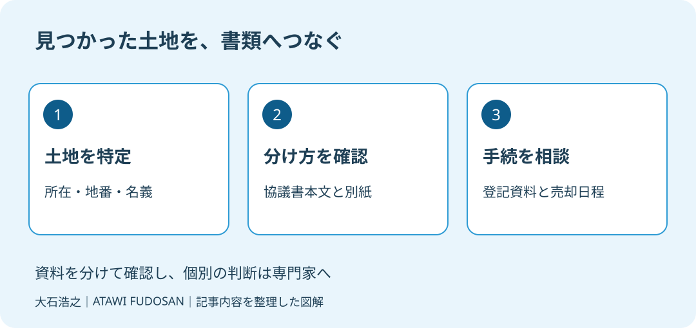

実家の相続は終わったと思っていたのに、売却の書類を集めたら、協議書にない土地が見つかった。家の敷地と一緒に使っているため、別の土地だと意識していなかった。そんなとき、先に誰の失敗かを探すと、確認の順番が崩れます。
大石浩之（磐田市／不動産業）です。宅地建物取引士として、私は「書類があるから大丈夫」とも、「全部やり直し」とも即答しません。2026年10月10日に確認した裁判所の説明を土台に、売却準備で揃える材料を整理します。
協議書があることと土地の分け方は別
京都家庭裁判所の「遺産分割調停」Q5は、分け方が決まっていない遺産について遺産分割を行うと説明しています。有効な遺言書や遺産分割協議書で分け方が決まっていれば原則不要です。一方、記載されていない遺産や、分け方が決まっていない遺産には遺産分割が必要としています。
私は、この説明の良い点は、書類の有無だけで手続を分けていないことだと考えます。協議書が手元にあっても、目の前の土地の扱いまで決まっているかは別の問いです。書類を作ったという達成感と、売却対象の確認を切り離せます。
そのうえで、一般向けの案内だけで「追加の一枚で足りる」「全員が押し直せばよい」と決めることには注文があります。協議書の条項、相続関係、土地の名義で相談内容は変わります。専門家へ原本全体を見せる手順までつなげたいところです。
意外に感じるかもしれませんが、土地の一覧に一筆見当たらないことと、分け方が何も決まっていないことは、同じと決めつけられません。「一筆」は登記で土地を数える単位です。後から見つかった財産についての条項がないかも含め、書面全体の確認が必要です。

確認1：見つかった土地を地番で特定する
協議書の記載漏れを確認するときは、対象の土地を所在と地番で特定するところから始めます。自宅の住所だけで照合を済ませず、土地の登記事項証明書などの表示を使います。ここからは、私が売却準備として勧める整理方法です。
登記事項証明書、手元の固定資産税の資料、協議書の不動産一覧を並べます。別の紙へ所在地と地番を写し、どの資料に載っているかを記録します。面積が違っていた場合も、その場で同じ土地だと補正せず、資料名と記載内容を残します。
| 整理する項目 | 相談に持参する内容 |
|---|---|
| 土地の表示 | 所在・地番・地目・面積 |
| 登記の名義 | 証明書で確認した名義と持分 |
| 協議書との対応 | 記載のあるページ、見当たらない箇所 |
| 現地での使い方 | 庭、通路など家族が把握する状況 |
庭や通路として一体に使っていても、書類上の対象が同じだとは限りません。逆に、地番の書き方が違って見えるだけかもしれません。私は現地の呼び名を登記の表示へ勝手に置き換えず、分からない対応関係を専門家への質問として残します。
ほかの土地も把握できていない可能性が気になる場合は、所有不動産の記録を確かめる記事で探索の段取りを確認できます。今回は財産を探す方法全般ではなく、見つかった土地と既存の協議書を照合する話です。
確認2：協議書を別紙まで読む
遺産分割協議書の確認では、土地の一覧だけでなく本文、別紙、後から見つかった財産に関する条項を一組として扱います。京都家庭裁判所の説明は、記載漏れなら必ず協議書全体を作り直す、とは述べていません。必要な書類は個別に確認します。
私なら、相談前に原本へ書き足したり、地番を訂正したりしないよう案内します。まず全ページの控えを取り、疑問の箇所は別紙に書く。原本の記載と家族が後から加えた説明が混ざらない状態を保つためです。別紙が見つからなければ、不足したままだと伝えます。
「その他の財産は誰が取得する」という文言が見つかっても、今回の土地にそのまま使えるかは判断を分けます。条項の意味や対象の範囲は弁護士などへ、登記申請に使える資料かは司法書士へ相談します。家族だけで文言を読み替えて売却を約束しません。
遺言書も残っている場合は、その存在を隠さず一緒に伝えます。遺言の曖昧な記載と相続登記は、言葉の意味を確認する準備としてつながります。新しい協議書案を先に作るより、何を根拠に分けたのかを揃える方が先です。
私は、見つかった一筆だけを見て話が簡単だとは言い切れません。すでに決まった分け方への影響があるのか、どの関係者に確認が必要かは迷うところです。その迷いを隠して期限を約束するより、資料を見てもらってから次の日程を決めたいと考えます。
確認3：登記と売却の日程を分ける
協議書から漏れた可能性がある土地の売却準備は、分け方の確認、登記に必要な資料の確認、売買の条件調整を分けて進めます。ここでいう登記は、土地の名義などを公の記録に反映する手続です。協議書を見つけた時点を、その手続の完了日とは扱いません。
私なら、仲介業者へ相談するときに、確認が済んだ土地と未確認の土地を区別して渡します。「この通路も売買に含める予定だが、協議書との対応は確認中」といった形です。確認中であることが伝われば、資料の不足を含めて段取りを相談できます。
買主へ渡す範囲が固まらないうちに、家族が引渡日だけを決めるのは避けます。書類を誰が集めるか、専門家から何を聞くか、確認後に誰が仲介業者へ伝えるかを決めます。必要な日数や費用は一律に置かず、依頼先の回答を受けて家族で共有します。
売却代金を相続人で分ける予定なら、換価分割で確認したい記載も別の論点になります。土地を誰が取得するかと、売ったお金をどう分けるかを混ぜずに相談してください。税務の扱いは税理士への確認が必要です。
磐田・袋井で相談資料を一組にする
磐田市・袋井市の実家で今日できる確認は、協議書の不動産一覧に、売却したい土地の地番があるかを一件照合することです。足りないと気づいた資料は、担当する家族と保管場所をメモします。売却を決める前でも、この確認は進められます。
私はこう考えます。家族で机に書類を並べるなら、最初の問いは「誰が間違えたか」ではなく「どの土地が未確認か」にしたい。協議書の控えに番号を振り、地番ごとの一覧と対応させる。空欄は推測で埋めず、そのまま相談用の質問にします。これは体験談ではなく、決断を急がせず、家族が話し合える材料を増やすために私が勧める場面です。
国土交通省は2026年9月4日の案内で、住生活月間を10月1日から31日までとしています。実家の書類を点検する季節のきっかけとして取り上げました。相続手続が2026年10月に新しく変わったという話ではありません。
- 対象土地の表示と名義を控える。
- 協議書は本文と別紙を揃える。
- 未確認事項を専門家に渡し、回答後に売却日程を組む。
富士ヶ丘サービスは磐田・袋井で介護と不動産を一体で相談し、家族が困らない売却を支えます。私は書類の不足を責めず、確かめる順番から案内します。相続の法的な判断は弁護士へ、登記は司法書士へ、税務は税理士へ、個別の事情を専門家に確認してください。
磐田市・袋井市では、介護施設の運営から不動産事業を始めた富士ヶ丘サービスのような地域密着の会社に、売却前の資料整理から相談する選択肢があります。